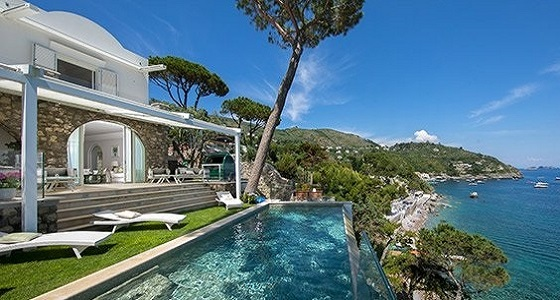
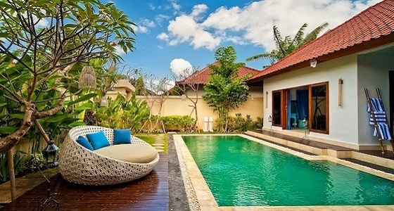
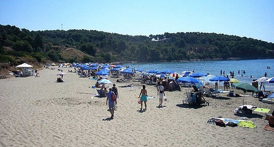

Villa Nikša & Kristina Cebalo

- Villa is located on Korcula Island in the small village Lumbarda. It has a spacious terrace with views of the Adriatic Sea and a private beach area.
Villa Captain's Sokol

- This property is 1 minute walk from the beach. Captain's Villa Sokol is a stone-made villa standing in a picturesque bay of Lumbarda, surrounded by pine-trees and situated just steps away from the sea.
The most popular beaches

- Vela Przina Beach is a lovely sandy beach, one of many picturesque beaches in Lumbarda, offering spectacular views across the sea all the way to Lastovo.
- This is a very popular sandy beach, filled with tourists and locals. Gets very crowded in summer so if you like sandy beaches hurry up to take good spot as early as possible.
- Located on the southern side of the island, so it faces open sea, though secluded within a large bay.
- There are two open-air cafes / restaurant right on the beach for simple foods and refreshments.
- Vela Przina Beach is a lovely sandy beach, one of many picturesque beaches in Lumbarda, offering spectacular views across the sea all the way to Lastovo.
- This is a very popular sandy beach, filled with tourists and locals. Gets very crowded in summer so if you like sandy beaches hurry up to take good spot as early as possible.
- Located on the southern side of the island, so it faces open sea, though secluded within a large bay.
- There are two open-air cafes / restaurant right on the beach for simple foods and refreshments.
Friendly useful links
Getting around, Beaches, Sights, Restaurants, Day Trips, Things to Do, Nightlife, Places on the Island, Weather
Flights and Airports, Ferries Korcula, Buses & Roads
All maps in one place
Art, Architecture Korcula, Museums, History Marco Polo, Moreska
Cycling, Fishing, Sailing, Walking Korcula, Windsurfing Korcula